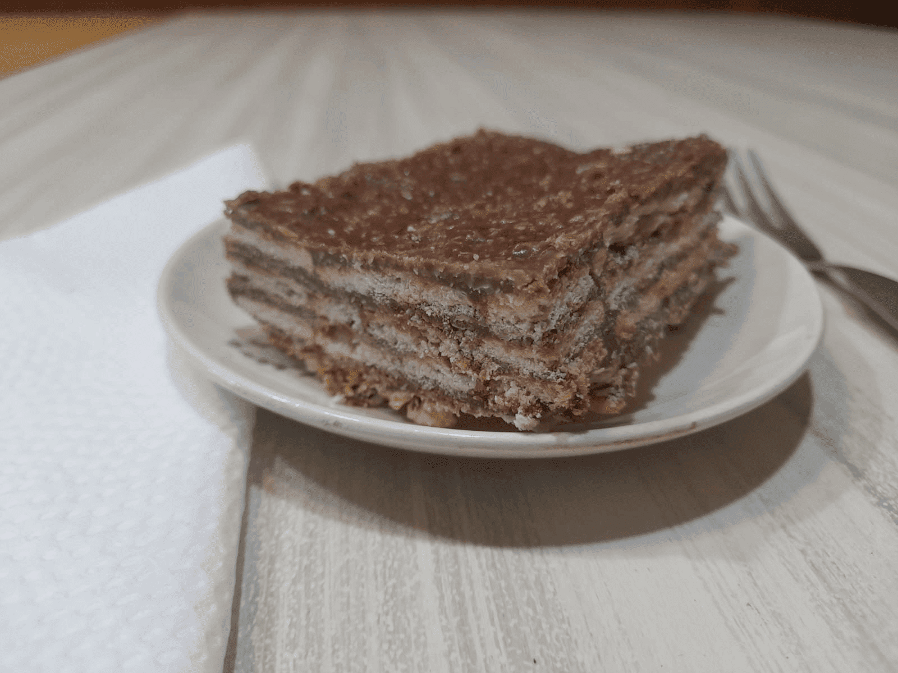

Se trata de un postre muy rico y fácil de preparar.
Aquí la ancestral receta proveniente de un recorte amarillento de revista:
Ingredientes:
- 1 pan de manteca de 200 g
- 1 taza de chocolate rallado o en polvo
- 1 taza de azúcar
- 6 cucharadas soperas de leche
- 2 tazas de avena instantánea
- 3 paquetes de galletitas de agua (en lo posible chiquitas)

Preparación:
-
Derretir la manteca en una pequeña olla.
Agregar el chocolate, el azúcar y la leche.
-
Mezclar todavía al fuego durante 5 minutos, vertiendo las dos tazas de avena.
Una vez finalizado, retirar del fuego.
-
En un molde (preferentemente rectangular), cubrir el fondo con una capa de
galletitas de agua. Luego, colocar una capa de la mezcla sobre las galletitas.
-
De la misma forma que en el paso anterior, colocar capas de galletitas y mezcla
intercaladamente hasta que no haya más mezcla.
¡No debe quedar la última capa de galletitas!
-
Colocar el molde en la heladera hasta que el turrón quede bien duro.
¡Listo! Se puede servir cortado en cuadraditos como postre o para acompañar una merienda.
¡A disfrutar!